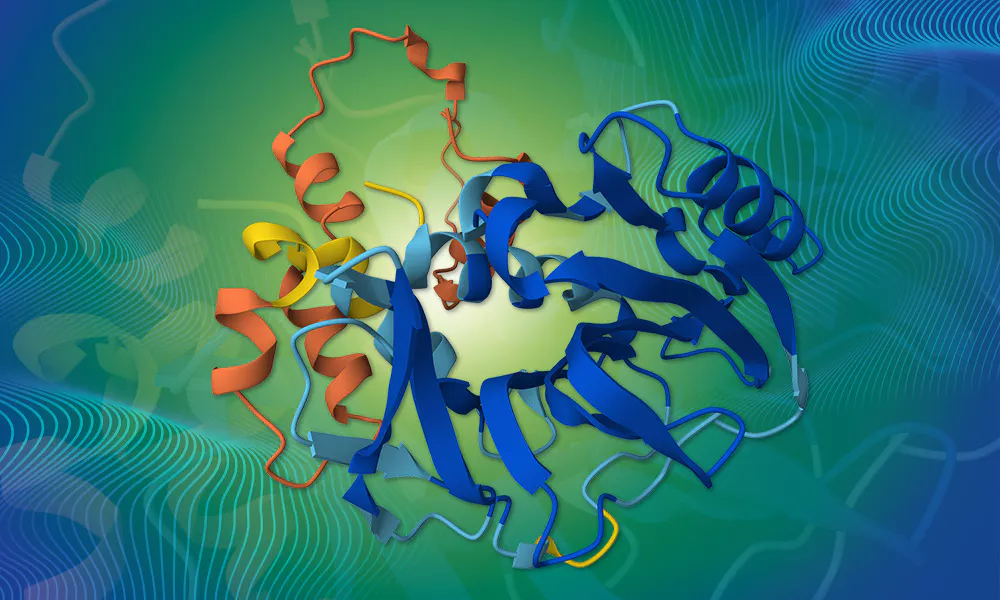

Molecular Virology X Artificial Intelligence
We are based at the MRC-University of Glasgow Centre for Virus Research. We apply state-of-the-art biological AI to enable and accelerate discoveries in molecular virology.
// Featured

New · Feb 2026
Viro3D Joins the AlphaFold Database
Our Viro3D viral protein structure predictions — 85,000+ models spanning 4,400 human and animal viruses — have been incorporated into the EMBL-EBI AlphaFold Database as a community dataset, making them accessible through the world's leading protein structure resource.